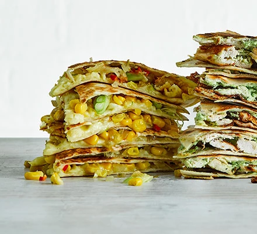

Chilli corn & spring onion quesadilla
Ingredients
- 1 tbsp olive oil
- ½ finely chopped onion
- ½ finely chopped red chilli
- ½ tsp ground coriander
- 200g canned sweetcorn , drained
- 3 spring onions , sliced
- 1 lime , zested
- 2 large flour tortillas
- 30g cheddar , grated
- 30g mozzarella , grated
- chilli sauce , to serve (optional)

Method
STEP 1
Heat the oil in a frying pan, add the onion and fry for 10 mins or until softened. Add the chilli and ground coriander and cook for 1 min more. Stir through the sweetcorn, spring onions and lime zest. Season to taste.
STEP 2
Pile the mixture on 1 tortilla, then top with the cheddar, mozzarella and the second tortilla. Heat a frying pan over a high heat. When hot, add the quesadilla, cook for 2 mins on one side, then turn it over and cook for 1-2 mins more, or until the cheese is melted. Cut into four and serve with some chilli sauce, if you like.
Bacon, sundried tomato & feta rolls
Ingredients
For the pastry
- 225g plain flour , plus extra for dusting
- 175g frozen butter
For the filling
- 10 streaky bacon rashers, finely chopped
- 100g sundried tomato in oil (about 12-16), finely chopped
- 100g feta cheese , crumbled
- small bunch fresh basil , chopped
Method
STEP 1
For the pastry, sift the flour and a pinch of salt into a large bowl. Grate in the frozen butter. Use a kitchen knife to mix until all the pieces of butter are coated with flour. Stir in 150ml cold water to form a soft dough, then bring together with your hands. Wrap in cling film and chill in the fridge for 30 mins.
STEP 2
Heat oven to 200C/180C fan/gas 6. On a lightly floured surface, roll out half the pastry to a long rectangle, about 9 x 45cm. Scatter half the filling ingredients along the pastry, towards one edge. Brush the other edge with egg and fold it over the filling, pressing the pastry edges to seal into a long sausage roll. Brush the top with more egg, then cut into 3cm-long rolls. Use scissors to snip little ‘V’ shapes in the top of each roll.
STEP 3
Repeat with the remaining pastry and filling, then arrange the rolls on baking parchment-lined baking trays. Bake for 15-20 mins until golden brown.